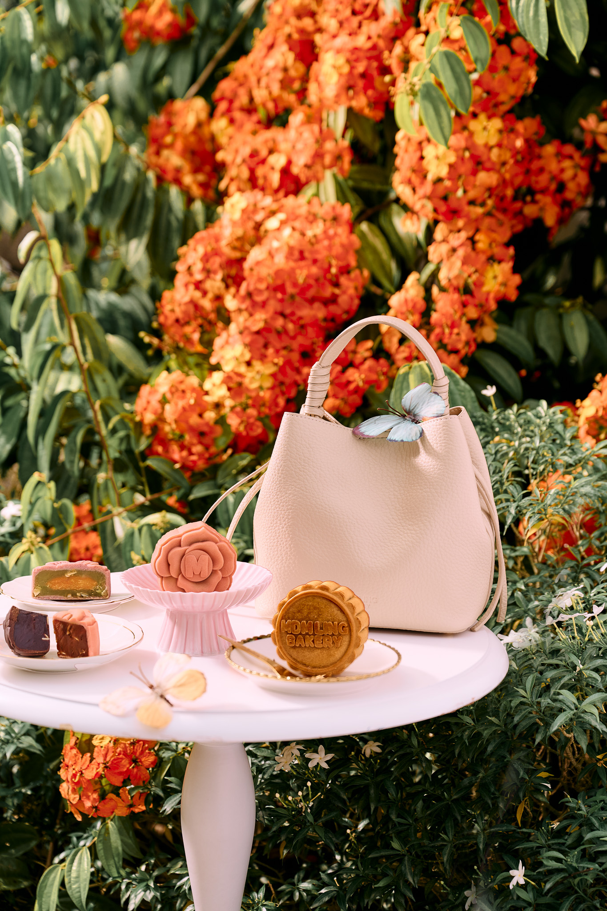

Leather Gift Bag
The Dawn 花晨
花晨 huā chén · flower morning
Soft as first light, The Dawn is a cream leather bag made to be carried long after the celebration ends.
Its gentle, neutral tone and supple finish move easily from a festive visit to everyday wear, a quiet kind of luxury that never asks for attention.
Its name comes from the old idiom 花晨月夕, flower mornings and moonlit evenings, the two loveliest hours of any day. We split it across a pair of bags: The Dawn is 花晨, the morning the flowers open, in cream like first light.
Designed as a keepsake rather than a wrapper, The Dawn turns a Mid-Autumn gift into something kept, used and remembered for years to come. Pair it with The Dusk, its warmer companion, for two halves of the same day.